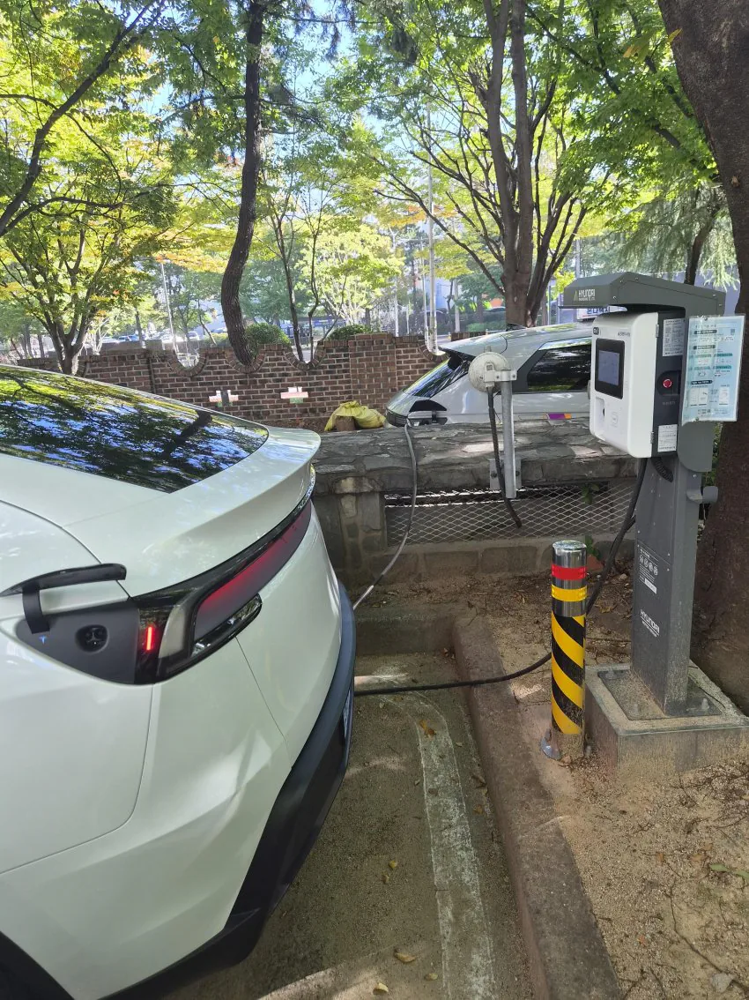
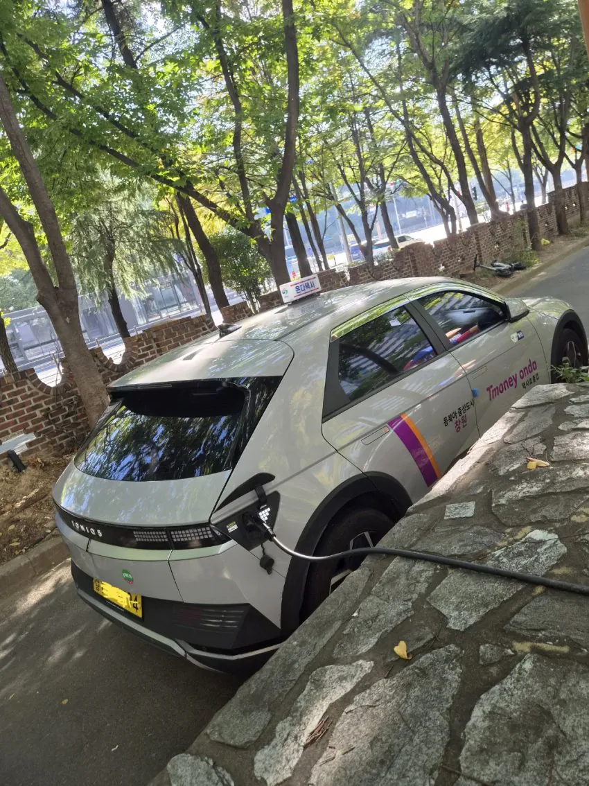
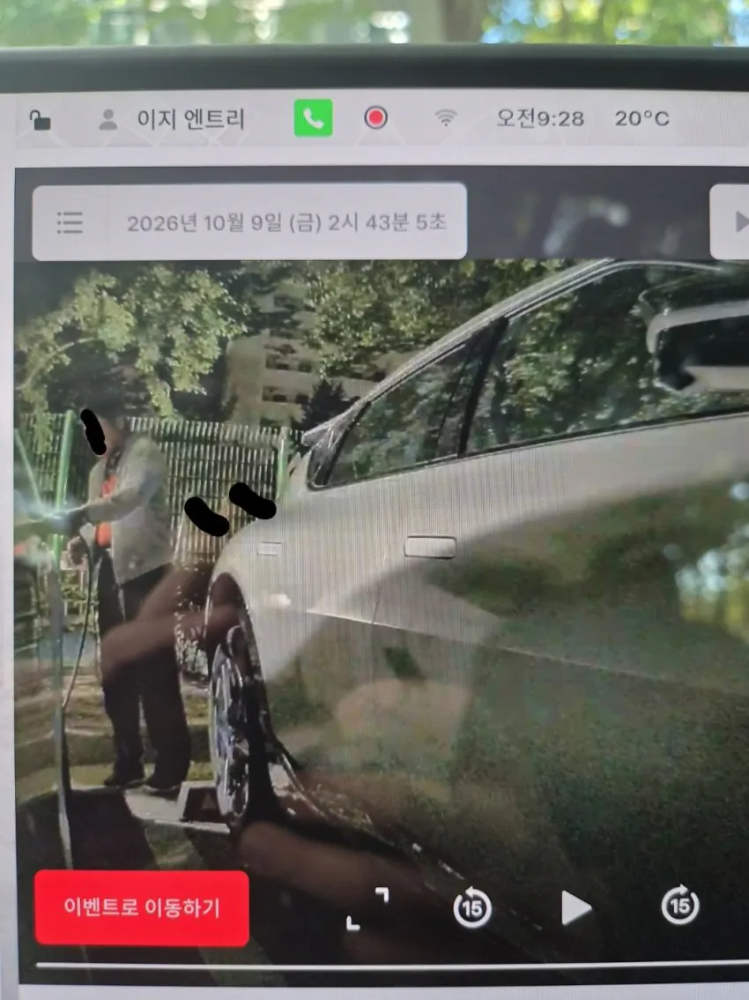
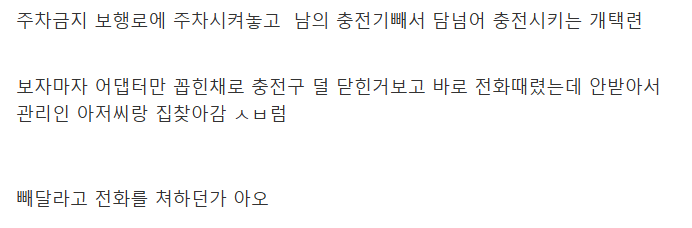

충전 시간 이상 주차가 되고 있던 정황이 있는건강?
그런 정황이 있어도 전화를 해야지 ㅋㅋㅋ
저러면 돈은 누구꺼로 나감?
다행히 택시
충전중이던거 뽑히면 충전 중단되고 결제 바로 되기때문에 충전전기까지 택시가 긴빠이 치는건 아님
전기차는 꽂는 충전구 어뎁터마다 id가있어서 그걸로 들어감
돈이야 나가봐야 만원안팍이고
충전 다 안된건데 빼간거면 그게 더 빡치는거
충전이 다 안되면 못빼가
다 안되도 버튼 누르면 빠져
우리집꺼는 구형이라 안되나보네 ㅠ
차에서 잠기는거면 못 뺀다
그거도 다 설정됨
ㅅㅂ ㅋㅋㅋㅋㅋ
충전방해행위로 과태료 먹을텐데
전화를 스킵하고 긴빠이부터 시도하는건 신기허긴하네
미친놈인줄
ㅋㅋㅋㅋㅋㅋㅋㅋㅋㅋㅋㅋㅋㅋㅋ씨발